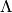

detrender.py - De-trending models¶
This module contains the generic models used to de-trend light curves for
the various supported missions. Most of the functionality is implemented in
Detrender, and specific de-trending methods are implemented as
subclasses. The default everest model is nPLD.
-
class
everest.detrender.Detrender(ID, **kwargs)¶ A generic PLD model with scalar matrix L2 regularization. Includes functionality for loading pixel-level light curves, identifying outliers, generating the data covariance matrix, computing the regularized pixel model, and plotting the results. Specific models are implemented as subclasses.
General:
Parameters: - ID – The target star ID (EPIC, KIC, or TIC number, for instance)
- cadence (str) – The cadence of the observations. Default
lc - clobber (bool) – Overwrite existing
everestmodels? DefaultFalse - clobber_tpf (bool) – Download and overwrite the saved raw TPF data? Default
False - debug (bool) – De-trend in debug mode? If
True, prints all output to screen and enterspdbpost-mortem mode for debugging when an error is raised. DefaultFalse - mission (str) – The name of the mission. Default k2
Detrender:
Parameters: - aperture_name (str) – The name of the aperture to use. These are defined in the datasets and are mission specific. Defaults to the mission default
- bpad (int) – When light curve breakpoints are set, the light curve chunks must be stitched together at the end. To prevent kinks and/or discontinuities, the chunks are made to overlap by
bpadcadences on either end. The chunks are then mended and the overlap is discarded. Default 100 - breakpoints – Add light curve breakpoints when de-trending? If
True, splits the light curve into chunks and de-trends each one separately, then stitches them back and the end. This is useful for missions like K2, where the light curve noise properties are very different at the beginning and end of each campaign. The cadences at which breakpoints are inserted are specified in theBreakpoints()function of each mission. Alternatively, the user may specify a list of cadences at which to break up the light curve. DefaultTrue - cbv_num (int) – The number of CBVs to regress on during post-processing. Default 1
- cbv_niter (int) – The number of
SysRemiterations to perform when computing CBVs. Default 50 - cbv_win (int) – The filter window size (in cadences) for smoothing the CBVs. Default 999
- cbv_order (int) – The filter order for smoothing CBVs. Default 3
- cdivs (int) – The number of light curve subdivisions when cross-validating. During each iteration, one of these subdivisions will be masked and used as the validation set. Default 3
- cv_min (str) – The quantity to be minimized during cross-validation. Default MAD (median absolute deviation). Can also be set to TV (total variation).
- giter (int) – The number of iterations when optimizing the GP. During each iteration, the minimizer is initialized with a perturbed guess; after
giteriterations, the step with the highest likelihood is kept. Default 3 - gmaxf (int) – The maximum number of function evaluations when optimizing the GP. Default 200
- gp_factor (float) – When computing the initial kernel parameters, the red noise amplitude is set to the standard deviation of the data times this factor. Larger values generally help with convergence, particularly for very variable stars. Default 100
- kernel_params (array_like) – The initial value of the
Matern-3/2kernel parameters (white noise amplitude in flux units, red noise amplitude in flux units, and timescale in days). DefaultNone(determined from the data) - get_hires (bool) – Download a high resolution image of the target? Default
True - get_nearby (bool) – Retrieve the location of nearby sources? Default
True - lambda_arr (array_like) – The array of  values to iterate over during the cross-validation step. is the regularization parameter, or the standard deviation of the Gaussian prior on the weights for each order of PLD. Default
10 ** np.arange(0,18,0.5) - leps (float) – The fractional tolerance when optimizing . The chosen value of will be within this amount of the minimum of the CDPP curve. Default 0.05
- max_pixels (int) – The maximum number of pixels. Very large apertures are likely to cause memory errors, particularly for high order PLD. If the chosen aperture exceeds this many pixels, a different aperture is chosen from the dataset. If no apertures with fewer than this many pixels are available, an error is thrown. Default 75
- optimize_gp (bool) – Perform the GP optimization steps? Default
True - osigma (float) – The outlier standard deviation threshold. Default 5
- oiter (int) – The maximum number of steps taken during iterative sigma clipping. Default 10
- planets – Any transiting planets/EBs that should be explicitly masked during cross-validation. It is not usually necessary to specify these at the cross-validation stage, since deep transits are masked as outliers and shallow transits do not affect the lambda optimization. However, it is necessary to mask deep transits in short cadence mode, since these can heavily bias the cross-validation scheme to lower values of lambda, leading to severe underfitting. This parameter should be a tuple or a list of tuples in the form (t0, period, duration) for each of the planets to be masked (all values in days).
- pld_order (int) – The pixel level decorrelation order. Default 3. Higher orders may cause memory errors
- saturated_aperture_name (str) – If the target is found to be saturated, de-trending is performed on this aperture instead. Defaults to the mission default
- saturation_tolerance (float) – The tolerance when determining whether or not to collapse a column in the aperture. The column collapsing is implemented in the individual mission modules. Default -0.1, i.e., if a target is 10% shy of the nominal saturation level, it is considered to be saturated.
- transit_model – An instance or list of instances of
everest.transit.TransitModel. If specified,everestwill include these in the regression when calculating the PLD coefficients. The final instrumental light curve model will not include the transit fits – they are used solely to obtain unbiased PLD coefficients. The best fit transit depths from the fit are stored in thetransit_depthattribute of the model. DefaultNone.
-
cross_validate(ax, info='')¶ Cross-validate to find the optimal value of
lambda.Parameters: - ax – The current
matplotlib.pyplotaxis instance to plot the cross-validation results. - info (str) – The label to show in the bottom right-hand corner of the plot. Default ‘’
- ax – The current
-
cv_compute(b, A, B, C, mK, f, m1, m2)¶ Compute the model (cross-validation step only) for chunk
b.
-
cv_precompute(mask, b)¶ Pre-compute the matrices
AandB(cross-validation step only) for chunkb.
-
exception_handler(pdb)¶ A custom exception handler.
Parameters: pdb – If True, enters PDB post-mortem mode for debugging.
-
finalize()¶ This method is called at the end of the de-trending, prior to plotting the final results. Subclass it to add custom functionality to individual models.
-
fobj(y, y0, t, gp, mask)¶
-
get_outliers()¶ Performs iterative sigma clipping to get outliers.
-
get_ylim()¶ Computes the ideal y-axis limits for the light curve plot. Attempts to set the limits equal to those of the raw light curve, but if more than 1% of the flux lies either above or below these limits, auto-expands to include those points. At the end, adds 5% padding to both the top and the bottom.
-
init_kernel()¶ Initializes the covariance matrix with a guess at the GP kernel parameters.
-
load_model(name=None)¶ Loads a saved version of the model.
-
load_tpf()¶ Loads the target pixel file.
-
mask_planets()¶
-
optimize_lambda(validation)¶ Returns the index of
self.lambda_arrthat minimizes the validation scatter in the segment with minimum at the lowest value oflambda, with fractional toleranceself.leps.Parameters: validation (numpy.ndarray) – The scatter in the validation set as a function of lambda
-
plot_cbv(ax, flux, info, show_cbv=False)¶ Plots the final CBV-corrected light curve.
-
plot_final(ax)¶ Plots the final de-trended light curve.
-
plot_lc(ax, info_left='', info_right='', color='b')¶ Plots the current light curve. This is called at several stages to plot the de-trending progress as a function of the different PLD orders.
Parameters:
-
publish(**kwargs)¶ Correct the light curve with the CBVs, generate a cover page for the DVS figure, and produce a FITS file for publication.
-
publish_csv(**kwargs)¶
-
run()¶ Runs the de-trending step.
-
save_model()¶ Saves all of the de-trending information to disk in an npz file and saves the DVS as a pdf.
-
setup(**kwargs)¶ A subclass-specific routine.
-
update_gp()¶ Calls
gp.GetKernelParams()to optimize the GP and obtain the covariance matrix for the regression.
-
class
everest.detrender.rPLD(ID, **kwargs)¶ The regular PLD model. Nothing fancy.
-
class
everest.detrender.nPLD(ID, **kwargs)¶ The “neighboring stars” PLD model. This model uses the PLD vectors of neighboring stars to help in the de-trending and can lead to increased performance over the regular
rPLDmodel, particularly for dimmer stars.-
setup(**kwargs)¶ This is called during production de-trending, prior to calling the
Detrender.run()method.Parameters: - cdpp_range (tuple) – If
parent_modelis set, neighbors are selected only if their de-trended CDPPs fall within this range. Default None - mag_range (tuple) – Only select neighbors whose magnitudes are within this range. Default (11., 13.)
- neighbors (int) – The number of neighboring stars to use in the de-trending. The higher this number, the more signals there are and hence the more de-trending information there is. However, the neighboring star signals are regularized together with the target’s signals, so adding too many neighbors will inevitably reduce the contribution of the target’s own signals, which may reduce performance. Default 10
- parent_model (str) – By default,
nPLDis run in stand-alone mode. The neighbor signals are computed directly from their TPFs, so there is no need to have run PLD on them beforehand. However, ifparent_modelis set,nPLDwill use information from theparent_modelmodel of each neighboring star when de-trending. This is particularly useful for identifying outliers in the neighbor signals and preventing them from polluting the current target. Settingparent_modeltorPLD, for instance, will use the outlier information in therPLDmodel of the neighbors (this must have been run ahead of time). Note, however, that tests with K2 data show that including outliers in the neighbor signals actually improves the performance, since many of these outliers are associated with events such as thruster firings and are present in all light curves, and therefore help in the de-trending. Default None
..note :: Optionally, the
neighborsmay be specified directly as a list of target IDs to use. In this case, users may also provide a list ofeverest.utils.DataContainerinstances corresponding to each of the neighbors in theneighbors_datakwarg.- cdpp_range (tuple) – If
-
-
class
everest.detrender.iPLD(ID, **kwargs)¶ The iterative PLD model.
..warning :: Deprecated and not thoroughly tested.
-
setup(**kwargs)¶ This is called during production de-trending, prior to calling the
Detrender.run()method.Parameters: parent_model (str) – The name of the model to operate on. Default nPLD
-
-
class
everest.detrender.pPLD(ID, **kwargs)¶ A neighboring PLD extension that uses Powell’s method to find the cross-validation parameter
lambda.-
cross_validate(ax)¶ Performs the cross-validation step.
-
run()¶ Runs the de-trending.
-
setup(**kwargs)¶ This is called during production de-trending, prior to calling the
Detrender.run()method.Parameters:
-
validation_scatter(log_lam, b, masks, pre_v, gp, flux, time, med)¶ Computes the scatter in the validation set.
-